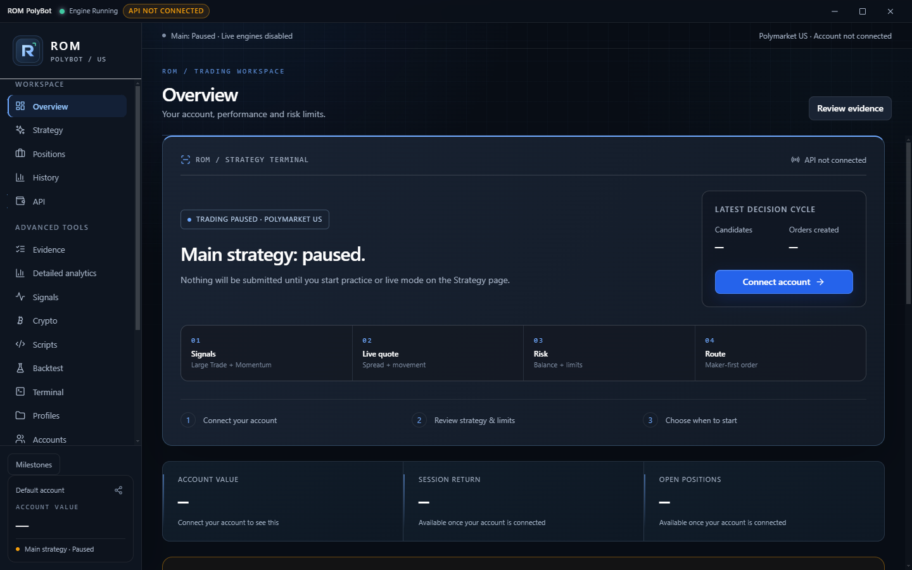
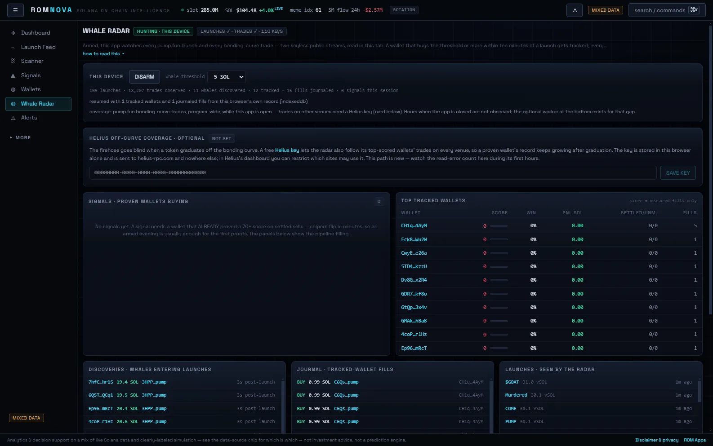

ROM POLYBOT / POLYMARKET US
Markets move.Stay in command.
Your Polymarket US trading desk. Scan markets, practice with simulated funds, and see what drives each decision.

Your account and strategy at a glance. Trading starts paused.
Expand screenshot. Opens in a new tab.Make it your desk.
Connect your Polymarket US API, try Practice with simulated funds, then review the evidence before enabling live trading.
Installers are unsigned; the Mac build is not Apple-notarized.
Installation & verification
On your phone? Share this page with your computer to download Polybot there.
romapps.xyz/#download-polybot ROM NOVA / SOLANA
ROM NOVA / SOLANA
Put Solana
on your radar.
Follow wallet activity and explore the market from one focused research workspace.
Research only; no trade execution. Some data is simulated. The browser app requires sign-in.

Good to know.
A few answers before you get started.
What do I need for Polybot?
A Windows 10 or 11 PC (64-bit), or an Apple Silicon Mac running macOS 15 or later, plus a verified Polymarket US account and its API Key ID and Secret Key. Create API keys on Polymarket US . No separate Python install is needed. Wallet-address copy trading is not supported on Polymarket US.
Can I use it on my phone?
Polybot is a desktop app for Windows and Apple Silicon Macs. It does not currently have a native iPhone app. ROM Nova works in a mobile browser.
Does Polybot guarantee a profit?
No. Signal scores are heuristics, not verified win probabilities. Practice uses simulated fills that can differ from exchange execution. Live authenticated trading and profitability remain unverified, and automated trading can lose money.
How does the ROMANR offer work?
New Polymarket US users can view the current offer with code ROMANR. Polymarket sets the amount, eligibility and qualifying steps. It may change or expire, and ROM may receive a referral reward.
Why might my computer warn about the download?
The installers are not yet code-signed. Use the published checksums and installation guide to verify the file before deciding whether to install it. A matching checksum confirms file integrity, not software safety.